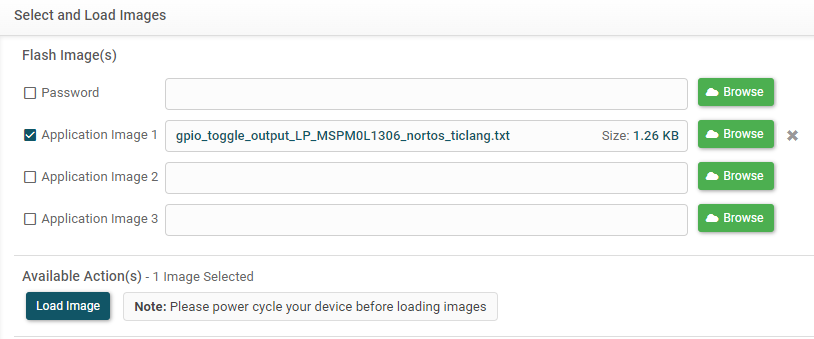
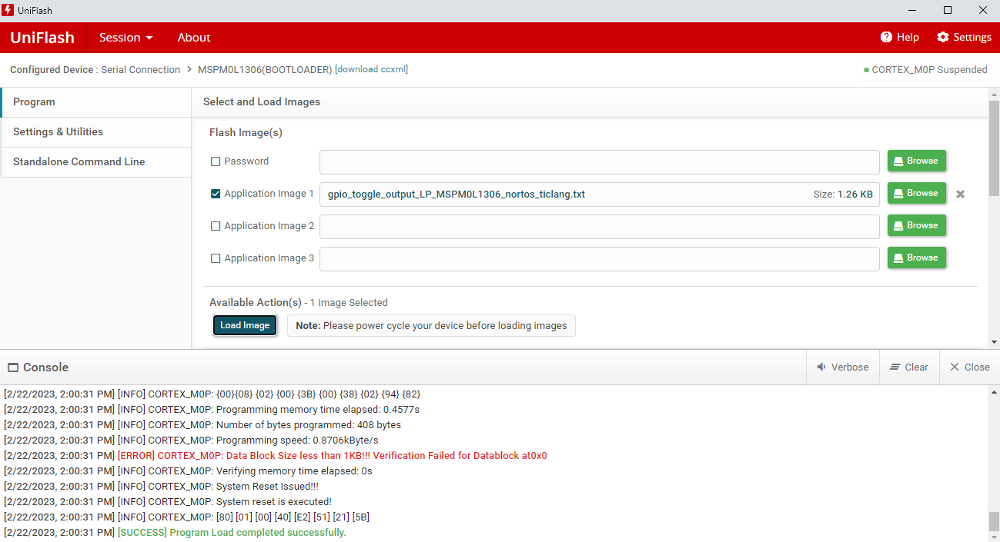

The user is expected to have downloaded the following:
UniFlash 8.2.0 or newer (Download latest version from ti.com or access on the cloud at dev.ti.com)
Compiled application image(s)
Can be in multiple file formats for debugger connections including .out, .bin, .hex, .txt
Serial connection only supports .txt and .hex file formats such as TI-TXT
Use your preferred IDE and compiler to build your application
UniFlash can connect and interact with the device either with a debugger connected via SWD to the device, or using the device’s bootloader and a serial UART connection.
The debugging interface such as XDS110 can be used by UniFlash to program the device. One can select the device (the on-chip version as shown below) and specific interface that will be used to start. Alternatively, UniFlash may auto-detect the MSPM0 LaunchPad if connected. The LaunchPad includes the Texas Instruments XDS110 USB Debug Probe.
Compile an application that is in a compatible format, such as a .out. All possible file types are described in the UniFlash Quick Start Guide.
Upload the flash image file as shown.
Adjust erase settings or other information as necessary. If performing a Factory Reset, please take special consideration as NONMAIN will be erased in the process. It is then the user’s responsibility to re-program non-main. It is recommended to verify this is correct behavior before proceeding with a Factory Reset.
Additionally, if using the factory reset, a password can be optionally provided. For more information, please refer to the corresponding device TRM.
Click Load Image. The image should be loaded correctly.
The Bootloader Programmer is an alternate method for writing to a device via the device’s serial UART connection without the presence of a debugger. When loading UniFlash, the selected device can use the bootloader programmer by searching the device name and selecting the bootloader option for the device as shown below.
Below are some hardware considerations that may be necessary for your device. Please consider that the pins used for UART are BSLRX and BSLTX and can be found in the device-specific datasheet.
Before any operation communicating with the device, the bootloader must be invoked. There are multiple ways that this can be done, such as beginning with a blank device or using the GPIO pin based invocation. For more information on the different invocation methods, please consult the Bootloader User Guide. When invoked, the BSL will detect interfaces for 10s before entering STANDBY, so any first use of UniFlash must happen within those 10 seconds.
When using the LaunchPad, please refer to the specific LaunchPad User Guides for any special considerations when using the BootLoader
If experiencing unreliable transmission, it may be necessary to place a pull-up on the transmit line of the UART.
Warning!!! When using UniFlash, it is possible to erase the NONMAIN region of flash by selecting the Factory Reset option from the Erase setting. The NONMAIN section contains crucial information about the device, including the Bootloader interface. If erased, it is important to reflash the device with a valid NONMAIN configuration during the flashing cycle. Otherwise, the device will not operate as intended and may become unrecoverable. The MSPM0 SDK includes a SysConfig NONMAIN configurator which can be used to easily and safely configure NONMAIN.
There are three cases for the device to perform a factory reset based on the boot configuration routine (BCR) in the NONMAIN region:
If enabled without a password, a factory reset can be performed.
If enabled with a password, select Enabled for the factory reset password in UniFlash. The provided password must match the password that is currently programmed on the device in order to perform a Factory Reset. Note that this Factory Reset Password is a separate password from the Bootloader Unlock Password (though both default to 32 bytes of 0xFF).
If disabled, the Factory Reset cannot occur.
See the device Technical Reference Manual for more information about factory reset configuration in NONMAIN
Configure the UART to match settings in the BSL region in NONMAIN. The default configuration is 9600 baud rate, 8-bit data width with 1 stop bit and no parity (no change). The COM port will not be auto-populated and will need to be updated based on the machine and operating system.
Add the binary images as desired. The text file will include the loaded location at the beginning. The password is only necessary if not using the default password. For more information about passwords, please consult Using Passwords.

Adjust any settings in the Settings & Utilities section if desired. This could include different erase mechanisms as well as custom CRC verification. If modifying the erase mechanisms, please consult NONMAIN considerations to make sure the device does not become unrecoverable.
Invoke BSL on the target device
Within 10 seconds, click Load Image in the Available Actions Tab. The program loaded successfully should be shown at the bottom of the console.

Note that if the image is not larger than 1KB, the following error will appear when using the Bootloader. Please see Known Issues for more information.
Every BSL transaction that accesses data is password protected by the 128-bit bootloader password. This defaults to 32-bytes of 0xFF and is checked during these transactions. By default, the developer does not need to provide the unlock password, as the default password will be used. This can be changed by setting the BSL password in the NONMAIN region. See the Technical Reference Manual for more information.
If the developer edits the BSL password the user will have to provide the matching password when flashing the device. This is done in TI TXT file format, using the following structure with the password contents replacing the default contents shown. The address is not used by the tool and thus can be 0x0000.
Memory reading is not enabled in NONMAIN by default, however the functionality is supported if desired. Refer to the device Technical Reference Manual for information about modifying NONMAIN to change the BSL memory read-out policy.
When enabled, a read from the device can be performed in the Settings & Utilities section of UniFlash on the top left-hand side of the screen.
In order to successfully read from a device, the Bootloader Unlock Password will be required. The default password is 32 0xFF bytes, written in UniFlash as 8 0xFFFFFFFF words.
When using the bootloader, there are some additional limitations with the current implementation:
The maximum size of data packet transfer depends on the BSL timer (10) and the baud rate, as well as the maximum buffer space. The transfer will not happen with respect to the watchdog and thus must complete in under 10 seconds. For example. A 10kB file with a start and stop bit will require 10240 * (10 bits/packet) / (9600 bits/second) = 10.67 seconds which would cause a timeout. In this case, a higher baud rate is recommended.
CRC Verification does not work for sizes less than 1kB, an error for the verification will be thrown in this case.
5. Known Issues and Frequently Asked Questions (FAQ)¶